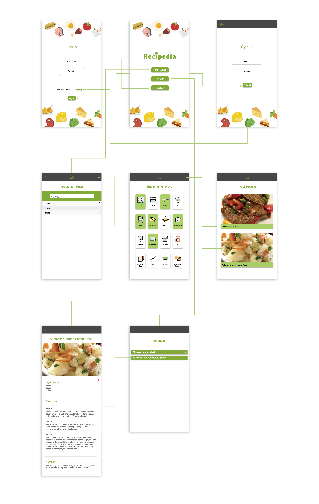
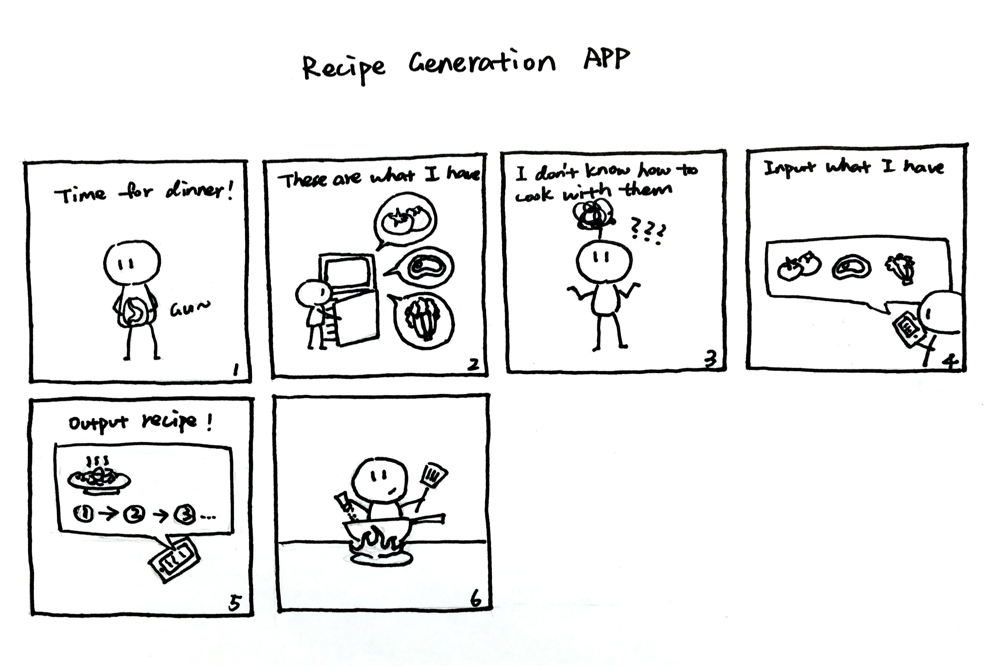
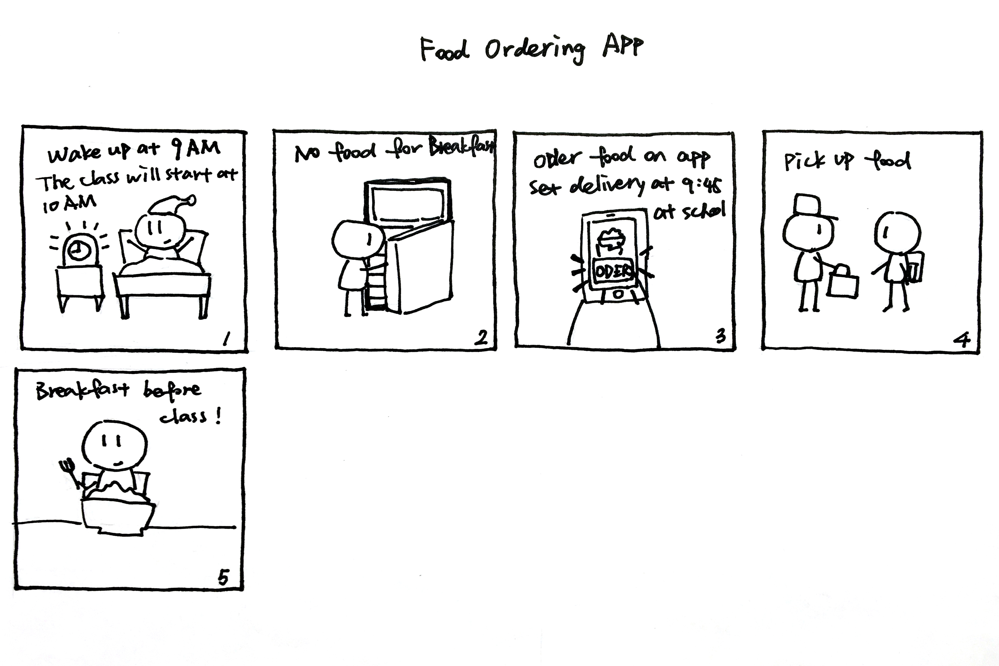
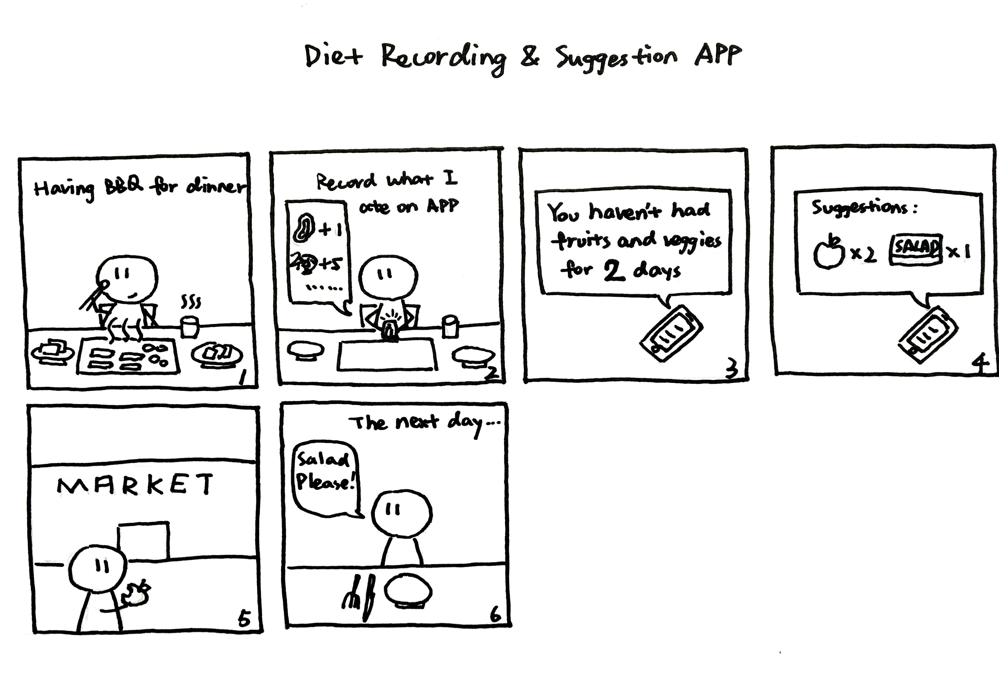
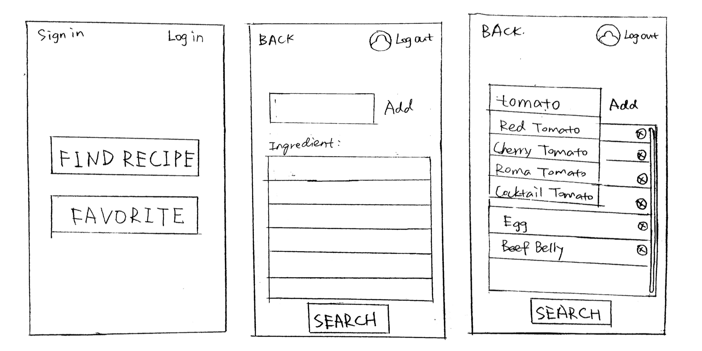
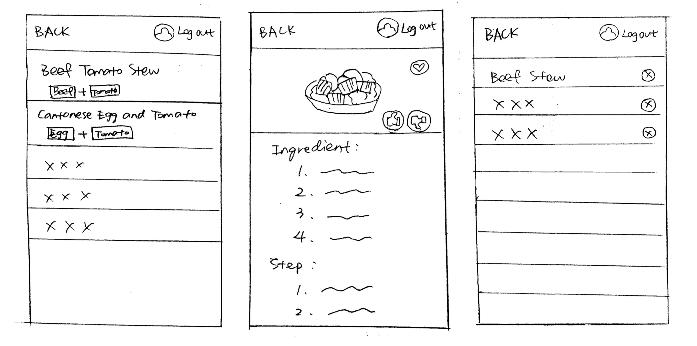
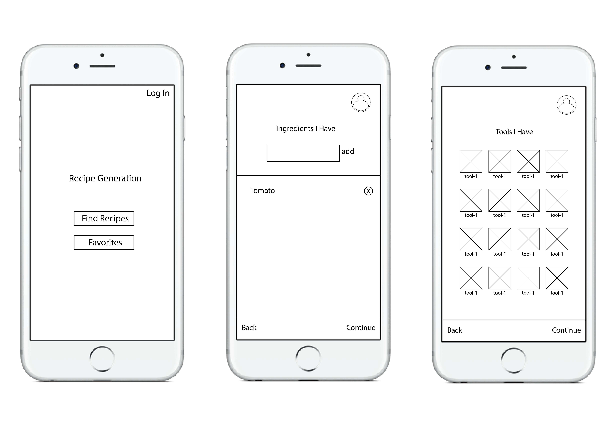
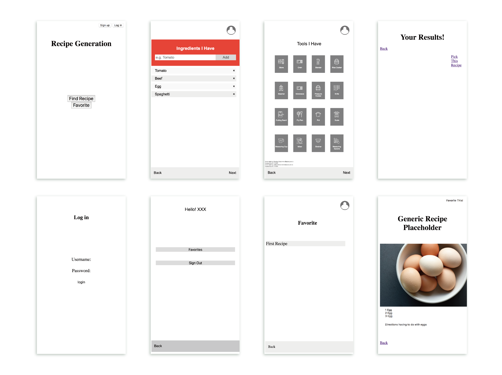
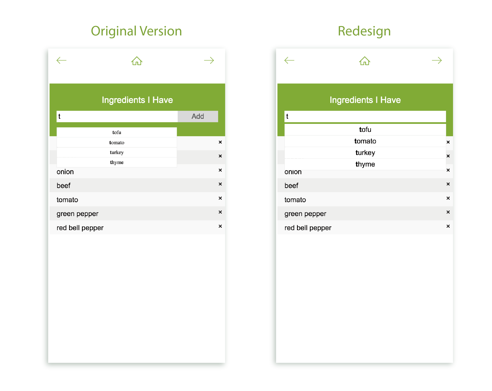

Recipedia is a recipe searching web App, made with the programming languages of HTML, C++ and Javascript, with the aim to enhance diatery health of college students. My team built this web App as a school project.
The Team
Jiayu Luo
Zibin Dong
Quinn Hensley
My Role
In charge of front-end coding, visual design, and video making
Contributed in research, prototyping, and testing
Background & Concept
Based on our research, most college students have unhealthy eating habits, and one crucial reason is that they lack cooking knowledge and mobility to constantly shop for ingredients to make their own food.
Recipedia is designed to address this problem. It will allow the users to input ingredients and kitchen equipments they currently have and receive a best-matched list of recipes. The app will enhance nutritional and dietary health of students and reduce their dependance on pre-made food and dinning halls.
Layout & Task Flow
The Making Process
1. Needfinding
We observed and interviewed 4 college students in UC San Diego, focusing on their diatery habits. Based on this research, we listed 17 user needs and came up with 3 solutions to three different needs. After the Wizard-Of-Oz testing (will be mentioned in "Paper Prototype" part), we decided on the recipe generation App, later becoming Recipedia. Our Point of View is as below: Unhealthy eating habits of college students is mainly caused by schedule conflict, inexperience planning their own meals, and low accessibility of healthy food. Students need a tool to make healthier choice of food and reduce their dependence on dinning halls and frozen food.
2. Storyboards
  3. Paper Prototype
We used the paper prototype to conduct Wizard-Of-Oz testing and got numerous useful feedbacks. I also made a video to show the paper prototype and to explain the context of using the App.
 4. Wireframes
5. Skeleton
We used HTML, CSS and Javascript to make the skeleton, with rough design of the layout and navigable links that connect different pages.
6. Coding & Testing
We further polished the web app and conducted several usibility testings. Below are screenshots of Comparative Evaluation. We observed 8 people adding ingredients with our web app. Half of them used the original version, while the other half used the redesigned version. As a result, people using the redesigned version were able to do the task faster and with fewer mistakes. In comparison, people using the original version usually ignored the auto-complete function and preferred to type ingredient names, which leads to frequent mistakes.


© 2019 Jiayu Luo.